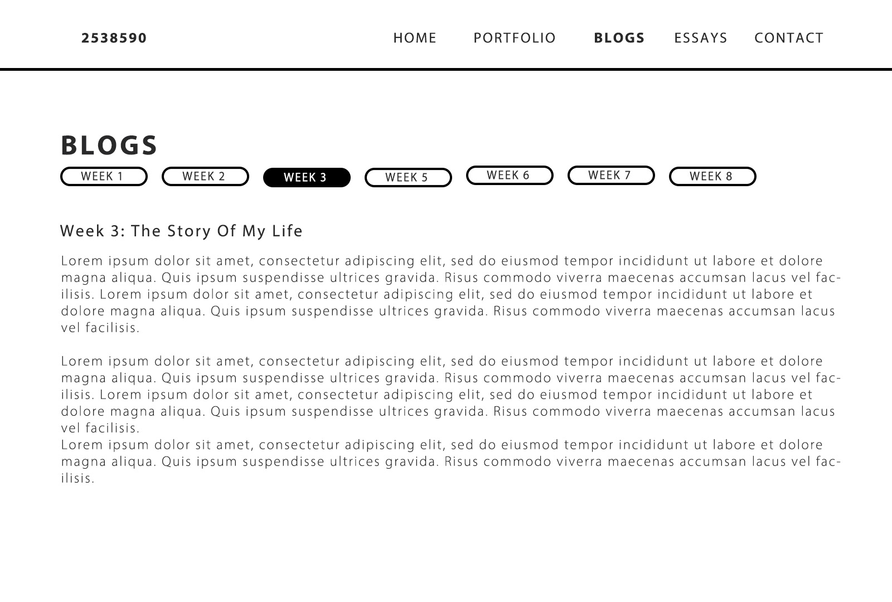

I haven't added the footer on my wireframes. I will add them on my next batch of wireframes. So let's act like there's "Brought to you by Matalame
Mamabolo" on the bottom of each wireframe.
Wireframe 1
I would want to structure my home page like this, with user interface buttons that help the user navigate through the
website just from clicking. I want to include an image of myself but I’m also considering putting a silhouette of myself, like the
image portrays. I would also want to include a quote about Interactivity just as an icebreaker.
Wireframe 2
This is part of the home page. It includes a little overview about myself, my interests, my goals and just some random stuff.
Wireframe 3
This is the page that takes the user to the different categories of my portfolio and these will be user interface buttons that will take the user to the respective pages with the images and information of my portfolio.
Wireframe 4
This is how the portfolio page will look like, it includes images of the work and descriptions of the work.
Wireframe 5

This is how the blog page will look and there will be user interface buttons that will allow the user to choose which blog they want to read.
Wireframe 6
The essay page is similar to the blogs page.
Wireframe 7
This is the contact page that will include all my necessary details.
User Flow
User's Goals (The main actions or goals users might have my site)
Learn about my skills and experience.
View my design and academic work.
Read my blogs and essays related to the school content.
Contact me for collaboration or more information.
Flow 1: Exploring My Portfolio
Start: User lands on the Home page.
Action: User clicks on the Portfolio page from the main navigation menu.
Process: User browses through my graphic and interior design projects.
End: User goes to the About Me page to contact you or returns to the Home page or goes to another page.
Flow 2: Reading and Engaging with Blog Posts
Start: User lands on the Home page.
Action: User navigates to the Blogs page via the main navigation menu.
Process: User selects a blog post from the secondary navigation menu specific to the Blogs page.
Interaction: User reads the blog post
End: User either navigates to another blog post, returns to the Home page, or visits the another page.
Flow 3: Learning About the Website Design Process
Start: User lands on the Home page.
Action: User selects the Design page from the main menu.
Process: User reviews the design planning documents, style guides, colours, layouts, and wireframes.
End: User either returns to the Home page, or visits another page.
Flow 4: Accessing Academic Essays
Start: User lands on the Home page.
Action: User clicks on the Essays page from the main navigation.
Process: User selects and reads the different academic essays.
End: User either returns to the Home page, or visits another page.
Extra:
The navigation menus are clearly labelled and consistently placed across all pages.
Inspirational Websites
These are the websites I found to be interesting. The style, composition and design of these websites, are what I am going to attempt to cooperate in my website
I really like the way the text of this website is laid out, as well as the images. I drew inspiration from this to make my wireframe for the 'About Me' section.
The way the images in this website are positioned, inspired the way I will position my images for the portfolio page.
Information Structure
Home Page: On the home page the user has the ability to use the navigation menu to naviagte through the website to other pages.
The user is offered a bit of information about me and the website. There isn't really much more the user can do on this page.
Portfolio Page: On the portfolio page, the user has the navigation menu. They are presented with images and a brief description
of the artworks showcased on the page. The user is able to move between the portfolio images using the 'next' and 'previous' button.
Blog Page: Again the user has the navigation menu. They also have another one but for the weekly blogs, which they can use to decide
which blog they would like to read.
Essay Page: This page has the same structure as the Blog Page but for essays.
About Me(Previously known as the 'Contact Page'): Again, the navigation menu. This page will contain my contact details, social media accounts, and more about myself.
The user is also presented with a button that generates random facts about me.
Choice of Interface Elements:
Input Controls: On my website, I want to have buttons. Each button will show a little bit of information about a piece of artwork.
When you click on one of these buttons, it will show you more details about that artwork. Another other button will be the ‘back to top’ which
will automatically scroll up for the user instead, making it more efficient for them.
Navigational Components: These are tools that help you move around the website easily. For example, I want to include called a breadcrumb.
It's like a trail of breadcrumbs that shows you where you've been on the website. This helps you go back to previous pages or move to different
parts of the website quickly.
Informational Components: This part of my website will have message boxes. But instead of just giving regular information, I want to make
it fun! So, I'll use these message boxes to share funny or interesting facts about myself. For example, I might say something like "I love cars
so much that if I could, I'd have eight of them - but only if my wallet agrees!" This will help people get to know me better and show off my personality.
The shapes that I will include will be more rounded and curvy, these offer users a friendly and welcoming digital environment unlike sharp and hard-
edged corners that signify seriousness.
Typography
I am thinking of using modern minimalistic fonts such as Montserrat and Jura, to give the website a more clear and crisp appearance, making it legible.
Modern Aesthetic: Montserrat and Jura are both modern sans-serif fonts. Sans-serif fonts are often chosen for their clean and
contemporary appearance. They lack the decorative strokes (serifs) at the ends of characters, which gives them a sleek and minimalistic
look. This modern aesthetic helps the website to appear up-to-date and in line with current design trends.
Minimalism: These fonts embody minimalism, which is characterized by simplicity and clarity. Minimalist design focuses on essential
elements and eliminates unnecessary distractions. Montserrat and Jura have clean lines and uniform stroke widths, contributing to a
clutter-free visual experience. In web design, minimalism can enhance user focus and readability by reducing visual noise.
Legibility: Legibility refers to how easily text can be read. Montserrat and Jura are highly legible fonts, especially in digital
environments. Their clear letterforms and ample spacing between characters ensure that text is easy to read, even at smaller sizes
or on screens with varying resolutions.
Consistency: Both Montserrat and Jura offer a variety of font weights and styles. Consistent typography creates visual harmony.
By using these fonts consistently for headings, body text, and other elements, I will be able to establish a cohesive design language
that guides users through my site seamlessly.
Versatility: While Montserrat and Jura are distinct fonts, they complement each other well. Montserrat is often used for headings and
titles due to its bold and attention-grabbing style, while Jura's lighter weight and narrower proportions make it suitable for body text and
smaller elements.
Colours Palette 1:
My first colour palette consists of the colours: YInMn Blue, Columbia Blue, Lemon Chiffon, Black, and Ivory in my website's colour palette.
YInMn Blue: This is a vibrant and attention-grabbing shade of blue. Its unique quality is its brightness and richness, which
can evoke feelings of trust, stability, and professionalism. Blue is often associated with reliability and calmness, making it
suitable for making the website convey trustworthiness and authority. YInMn Blue can give the website a modern and sophisticated
feel due to its novelty and intensity.
Columbia Blue: Columbia Blue is a lighter shade of blue. It's soothing and easy on the eyes, evoking feelings of tranquillity
and openness. Lighter blues like Columbia Blue often create a sense of spaciousness and airiness, which will help my website feel
more inviting and comfortable for users to navigate. This colour also complements the YInMn Blue well, providing a softer contrast
while maintaining a cohesive colour scheme.
Lemon Chiffon: Lemon Chiffon is a warm, light yellow colour. Yellow is associated with happiness, optimism, and energy. Lemon
Chiffon specifically has a softness to it that can add warmth and friendliness to my website. Incorporating this colour can bring a
cheerful and uplifting vibe, which is especially useful to create a positive user experience and could be used to draw attention to
specific elements like call-to-action buttons or other important messages.
Black: Black is a classic colour that I will use for text, and borders. It provides a strong contrast against lighter colours,
making text and images stand out and improving readability. Black also adds a sense of sophistication and elegance towards the website's
overall aesthetic.
Ivory: Ivory is a creamy off-white colour. It's softer and warmer than pure white, which can feel stark or cold in some contexts.
Ivory adds a sense of warmth and elegance to your website, creating a more inviting atmosphere for users.
Colours:
The second palette consists of Payne's gray, Columbia blue, Alice Blue, True Blue, and Lapis Lazuli
Payne's Grey: This colour is a dark, bluish-grey shade. It often conveys a sense of elegance, sophistication, and seriousness.
It can be calming and professional, making it suitable for backgrounds or text in areas where I want to evoke trust or authority.
Payne's Gray can also provide a strong contrast when paired with lighter colours, enhancing readability and visual hierarchy on the
website.
Columbia Blue: Columbia Blue is a light, pale blue colour reminiscent of clear skies. It evokes feelings of tranquillity,
openness, and purity. This colour is often associated with dependability and reliability. Columbia Blue can also create a refreshing
and welcoming atmosphere.
Alice Blue: Alice Blue is a delicate shade of pale blue with a hint of grey. It carries a sense of softness, serenity, and purity.
This colour helps create a clean and minimalist aesthetic, making it suitable for backgrounds, borders, or accents. Alice Blue can evoke
a sense of calmness and clarity, helping to reduce visual clutter and draw attention to key content or calls to action on the website.
True Blue: True Blue is a vibrant and saturated blue hue that signifies confidence, stability, and trustworthiness. It's a versatile
colour that can be used to create emphasis or focal points on the website. True Blue can evoke a sense of professionalism and authority,
making it suitable for headlines, buttons, or important information. Its boldness can also grab users' attention and encourage interaction.
Lapis Lazuli: Lapis Lazuli is a deep, rich blue colour often associated with luxury, royalty, and spirituality. Its intense hue can evoke
feelings of depth, wisdom, and introspection. Lapis Lazuli is well-suited for adding a touch of opulence or sophistication to your website,
whether through accents, borders, or decorative elements.
My goal and Aesthetic:
I am striving for a clean, neat, modern, and minimalistic website aesthetic prioritizing simplicity, organization, and usability. By including clean layouts
to avoid clutter and neatness to emphasize precision and tidiness in the design. Also by using modern elements to incorporate contemporary trends for a fresh appearance,
and minimalistic approach and focusing on core functionality and content which will ultimately result in good user experience, fostering clarity and engagement with
the website's content.